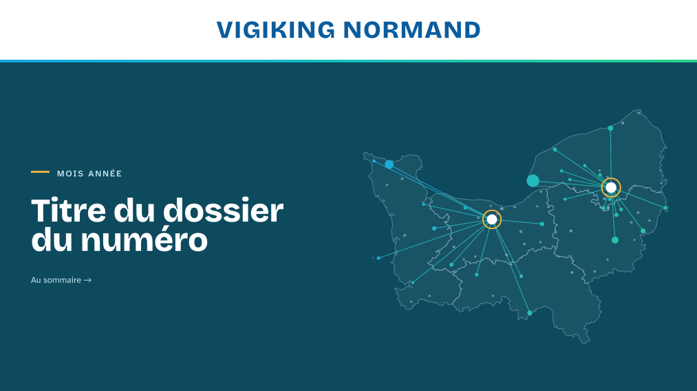
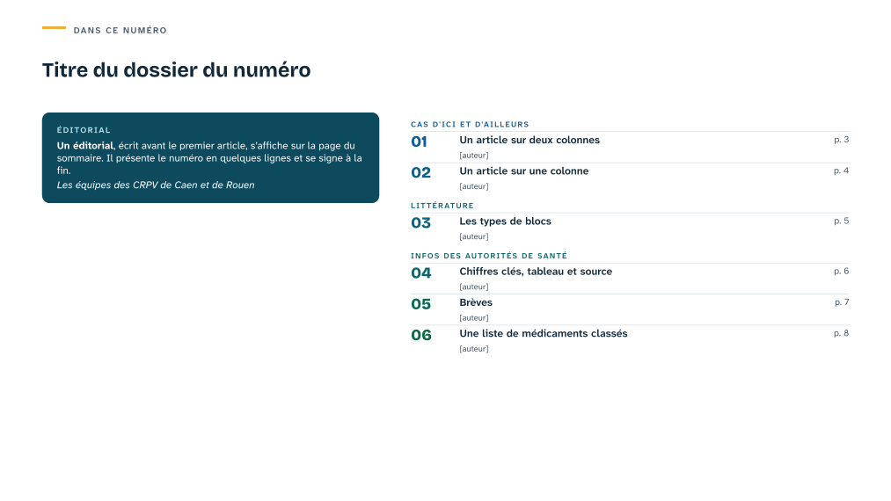
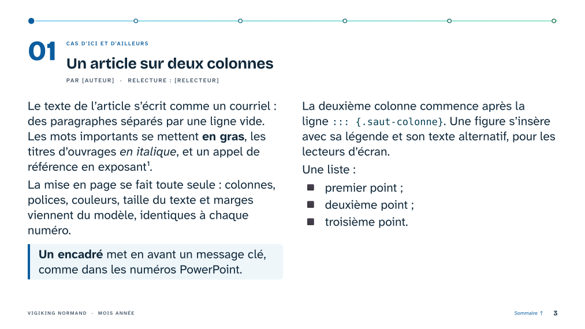
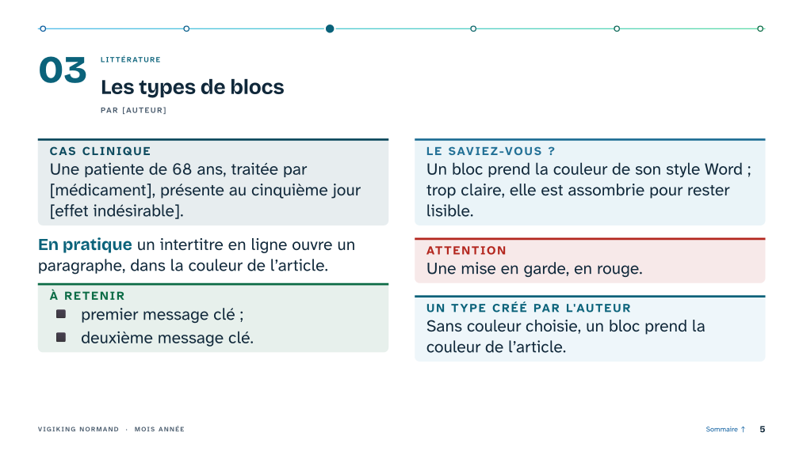
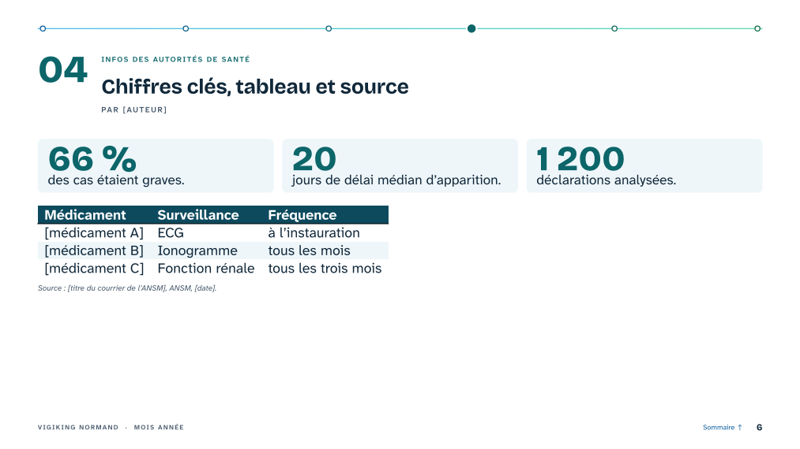
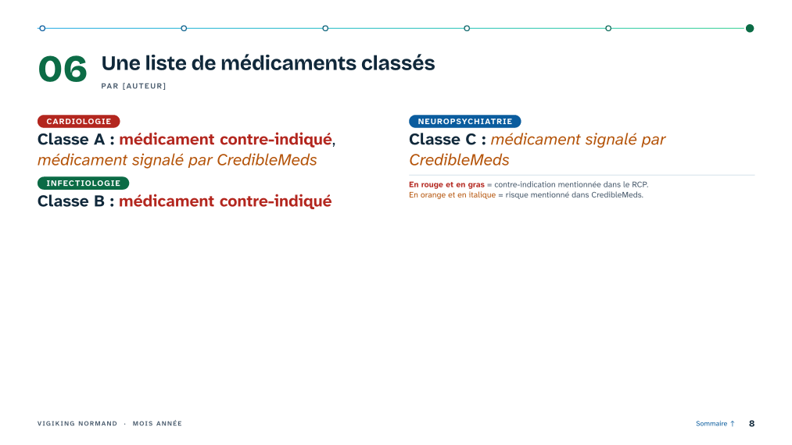
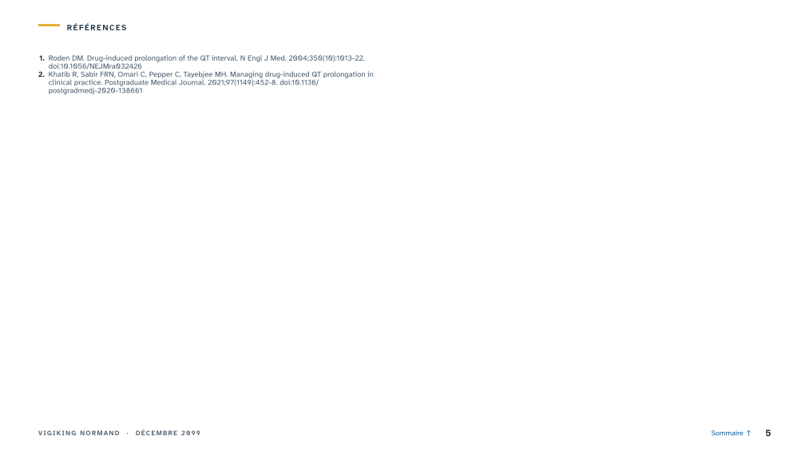
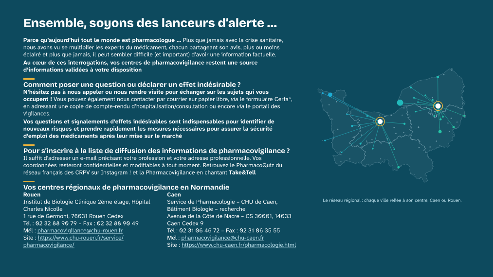

Écrire le numéro dans Word, pas à pas
Vous écrivez comme d'habitude. Seule règle : chaque élément du bulletin a son style dans le modèle, et c'est le style qui décide de la mise en page.
Partir du modèle
Double-cliquez sur
word/modele-vigiking.docx: il contient un petit numéro d'exemple qui explique chaque style. Faites tout de suite , au format , avec un nom parlant commeVigiking octobre 2025.docx, dans le dossier de votre choix.Vous écrivez seulement ? Le modèle suffit, rien à installer : téléchargez-le ci-dessous, et, une fois votre texte écrit, envoyez le fichier Word à la personne qui fabrique le bulletin.
Afficher la liste des styles
Onglet , dans la barre du haut de Word : la rangée des styles montre Normal, Titre 1… Pour les voir tous, cliquez sur la petite flèche en bas à droite de cette rangée : la liste complète s'ouvre à droite de l'écran (le « volet Styles »), avec Encadré, les Bloc…, Contre-indication, CredibleMeds. Gardez-la ouverte pendant que vous écrivez.
Remplir l'en-tête
Remplacez le titre (style Titre) par le thème du numéro, et le sous-titre (style Sous-titre) par le mois, écrit en toutes lettres : « Octobre 2025 ». Placez la photo de couverture juste en dessous, avant le premier article.
Sans photo, la couverture montre la carte du réseau normand. Pour une photo, prenez-la en paysage et assez grande (au moins 800 pixels de large).
Écrire les articles
Chaque article commence par son titre au style Titre 1. Juste en dessous, avant tout le reste, une ligne
Auteur : A. Nom(ouAuteurs : A. Nom, B. Nom, ouPar A. Nom) ; si besoin, une ligneRubrique : …, une des trois rubriques du bulletin (Cas d'ici et d'ailleurs, Littérature, Infos des Autorités de Santé : le sommaire les regroupe), et une ligneRelecture : B. Nom. Le texte s'écrit ensuite en style Normal : gras, italique, exposants, listes à puces ou numérotées sont gardés.Un article tient sur une page. Pour le passer sur deux colonnes, tapez un paragraphe
[saut de colonne]à l'endroit de la coupure. Pour plusieurs informations courtes sous un même titre (des brèves), donnez à chacune un intertitre au style Titre 2.Mettre en forme par les styles
Pour un paragraphe entier (Encadré, un des types de blocs, Chiffre clé, Source, Catégorie, Légende) : placez le curseur dans le paragraphe, puis cliquez sur le style. Pour quelques mots (Contre-indication, CredibleMeds, Intertitre en ligne) : sélectionnez-les d'abord, puis cliquez sur le style.
Un éditorial ? Écrivez-le avant le premier article, au style Éditorial : il s'affiche sur la page du sommaire. Un tableau ? , avec une ligne d'en-tête ; ne collez pas d'image de tableau.
Ajouter les images
. La largeur que vous donnez à l'image est gardée : sur la moitié de la page Word, elle occupe la moitié de la colonne. Juste sous l'image, écrivez sa légende dans un paragraphe au style Légende de figure, puis ajoutez son texte de remplacement (clic droit › ) : une phrase qui décrit l'image pour les personnes aveugles, dont l'ordinateur lit l'écran à voix haute.
Utilisez des images dont vous avez le droit, et citez leur source dans la légende.
Citer vos sources
Tapez le PMID ou le DOI entre crochets, là où vous citez :
[PMID 14999113](voir Citer).Enregistrer, puis envoyer ou déposer
Enregistrez (Ctrl + S). Envoyez le fichier Word à la personne qui fabrique le bulletin, ou, si c'est vous, déposez-le sur l'icône (voir Fabriquer le numéro). Le sommaire, la page Références et la dernière page du bulletin s'ajoutent à la fabrication : ne les écrivez pas.
- TitreAllongement du QTc et torsades de pointeLe thème, en grand sur la couverture
- Sous-titreOctobre 2025Le mois ; il nomme les fichiers
- ImageLa photo de couverturephoto de couverture
- Titre 1Quand parle-t-on de QT allongé ?Un nouvel article, sur sa page, numéroté
- NormalAuteur : A. Nom« Par A. Nom » sous le titre
- NormalRubrique : Cas d'ici et d'ailleursLa rubrique au-dessus du titre ; le sommaire regroupe les articles par rubrique
- NormalL'intervalle QT correspond au temps de dépolarisation et de repolarisation des ventricules [PMID 14999113].Le texte, avec l'appel de référence numéroté
- EncadréUn encadré, avec un trait de la couleur de l'articleQTc allongé : homme > 470 ms ; femme > 480 ms
- Bloc Cas cliniqueUn bloc titré « Cas clinique », dans sa couleurUne patiente de 68 ans, traitée par citalopram, présente une syncope…
- Titre 2Les facteurs de risqueUn intertitre dans l'article
- Normal[saut de colonne]La suite passe dans la seconde colonne
- ImageUne figure, réduite avec le texte si besoinélectrocardiogramme
- Légende de figureÉlectrocardiogramme (source : …)La légende sous la figure
- Titre 1Quels sont les médicaments à risque ?L'article suivant, sur une nouvelle page
- Catégorie rougeCardiologieUne étiquette rouge ; l'article devient une liste
- Normal + caractèresAntiarythmiques : sotalol, amiodarone, flécaïnideRouge et gras (Contre-indication), orange et italique (CredibleMeds)
À faire
- Un style par élément : Titre 1 pour chaque article, Encadré pour un message clé.
- Le mois en toutes lettres dans le sous-titre : « Octobre 2025 ».
- Une ligne « Auteur : » juste sous chaque titre (un nom ne s'affiche qu'avec l'accord de la personne nommée).
- Un texte de remplacement pour chaque image.
- Un type de bloc pour un cas clinique, des messages à retenir, une conduite à tenir.
- Des corrections dans Word, puis un nouveau dépôt sur l'icône.
À éviter
- Les couleurs, surlignages et fonds mis à la main : ils sont perdus. Passez par les styles, ou créez votre propre type de bloc.
- Les images de tableaux : floues et illisibles pour les lecteurs d'écran. Insérez un vrai tableau.
- Les tailles et polices réglées à la main : la mise en page les choisit elle-même.
- Écrire le sommaire, les références ou le dos : ils s'ajoutent seuls.
- Modifier le PDF : il est refait à chaque dépôt ; l'original, c'est le fichier Word.
Chaque style, et ce qu'il donne dans le bulletin
Vous ne réglez ni police, ni taille, ni couleur. Vous choisissez un style dans le ruban de Word, et le bulletin en fait l'élément correspondant.
Le thème du numéro sur la couverture, et son mois.
La photo de couverture, à côté du titre. Sans image, la couverture montre la carte du réseau normand.
Un article sur sa page, numéroté, dans sa couleur. Le texte grandit ou rétrécit pour remplir la page.
La rubrique au-dessus du titre. Le sommaire regroupe les articles sous Cas d'ici et d'ailleurs, Littérature, Infos des Autorités de Santé.
Il s'affiche sur la page du sommaire, à côté de la liste des articles.
Le texte de l'information…
Un intertitre. Plusieurs brèves tiennent ainsi sous un même titre.
L'article passe sur deux colonnes, coupées à cet endroit.
QTc allongé : homme > 470 ms ; femme > 480 ms
Un message clé mis en avant. Plusieurs paragraphes à la suite forment un seul encadré.
Une tuile par paragraphe : le nombre en grand, puis ce qu'il compte.
| Médicament | Surveillance |
|---|---|
| Amiodarone | ECG |
| Lithium | Lithémie |
L'en-tête sur fond bleu, une ligne sur deux teintée.
En pratique réaliser un ECG avant l'introduction.
Source : courrier de l'ANSM, 12 mars 2025.
Quelques mots en couleur qui ouvrent un paragraphe ; la source officielle d'un article, en petits caractères.
Une étiquette de catégorie ; l'article devient une liste de médicaments.
Rouge et gras, orange et italique : le code se lit aussi sans les couleurs.
En rouge et en gras = contre-indication mentionnée dans le RCP.
Petits caractères, pour un code couleur ou une liste tapée à la main.
Une figure et sa légende. Ajoutez aussi le texte de remplacement : clic droit sur l'image, puis « Modifier le texte de remplacement ».
Les types de blocs
Un cas clinique, des messages à retenir, une conduite à tenir : chaque type de contenu des numéros passés a son style « Bloc … » dans le modèle. Le bulletin en fait un bloc titré, dans sa couleur ; plusieurs paragraphes à la suite dans le même style forment un seul bloc.
Le récit d'un cas (âge, traitement, évolution), séparé du commentaire.
Bloc Cas cliniqueLes messages à retenir de l'article.
Bloc À retenirLa conduite à tenir, les recommandations.
Bloc En pratiqueUne information à côté du sujet, un rappel.
Bloc Le saviez-vous ?Le mécanisme d'action ou de l'effet indésirable.
Bloc MécanismeUne mise en garde, une erreur à éviter, un « never event ».
Bloc AttentionLes conseils à donner aux patients.
Bloc Pour les patientsCe que doivent faire les pharmaciens.
Bloc Pour les pharmaciensCe que doivent faire les prescripteurs.
Bloc Pour les prescripteursUn webinaire, une enquête, une nouveauté du réseau.
Bloc AnnonceCréer votre propre type de bloc
Dans le volet , cliquez sur le bouton , le premier des trois boutons en bas du volet.
Nom : « Bloc » suivi du titre du bloc, par exemple
Bloc Interaction. Ce titre s'affichera en tête du bloc.Type de style : Paragraphe ; Style basé sur : Normal.
Choisissez une couleur de police (dans la zone Mise en forme, le bouton A souligné de couleur) : ce sera la couleur du bloc. Sans couleur, le bloc prend celle de l'article.
Cliquez sur , puis appliquez le nouveau style comme les autres.
Une couleur trop claire est assombrie automatiquement, pour que le titre du bloc reste lisible. Pour retrouver ce type dans les prochains numéros, demandez à la personne qui gère le bulletin de l'ajouter au modèle.
L'association de la clarithromycine et de la colchicine expose à un surdosage en colchicine.
Citer un article : son PMID ou son DOI suffit
Tapez l'identifiant entre crochets, là où vous citez. Le numéro d'appel, la référence complète et la page « Références » se font seuls, dans l'ordre de citation.
L'allongement du QT expose aux torsades de pointe [PMID 14999113]. Les facteurs de risque se cumulent [DOI 10.1136/postgradmedj-2020-138661].
L'allongement du QT expose aux torsades de pointe1. Les facteurs de risque se cumulent2.
1. Roden DM. Drug-induced prolongation of the QT interval. N Engl J Med. 2004;350(10):1013-22. doi:10.1056/NEJMra032426
2. Khatib R, Sabir FRN, Omari C, Pepper C, Tayebjee MH. Managing drug-induced QT prolongation in clinical practice. Postgraduate Medical Journal. 2021;97(1149):452-8.
[PMID 14999113]Un article indexé dans PubMed (« (PMID 14999113) » marche aussi).
[DOI 10.1136/postgradmedj-2020-138661]Tout article qui a un DOI : son code, qui commence par 10., sur le site de la revue.
[Réf : CredibleMeds. https://www.crediblemeds.org]Une source sans identifiant : site, document interne. Le texte est repris tel quel.
À éviter
- « PMID:14999113 » ou « doi: 10.1136/… » sans crochets : la référence reste telle quelle, sans numéro (la liste à vérifier le signale).
- Mélanger les deux façons de faire : si vous tapez vous-même les numéros en exposant et la liste au style « Références », n'utilisez pas les crochets dans le même numéro.
Fabriquer le numéro
Une installation, une fois par ordinateur ; puis, à chaque numéro, le fichier Word déposé sur l'icône. Vous écrivez seulement ? Cette partie n'est pas pour vous : envoyez votre fichier Word à la personne qui fabrique le bulletin.
Installer
L'installation met en place deux petits logiciels gratuits, pour votre compte seulement, et l'icône du bureau. Prévoyez quelques minutes et une connexion Internet ; sur un poste du CHU, le service informatique devra peut-être intervenir.
Récupérer le dossier du bulletin
Téléchargez le dossier compressé (ZIP), puis faites un clic droit dessus et choisissez , vers vos Documents. Le dossier extrait peut avoir un long nom : c'est normal.
ZIPTélécharger le dossier du bulletin
La personne qui gère le bulletin vous donne aussi le dossier
commun(logos, bandeau Vigiking, dernière page du bulletin), qui n'est pas en ligne : placez-le dans le dossierbulletin, à côté du fichier Installer.N'ouvrez pas le fichier Installer depuis le ZIP sans l'avoir extrait : l'installation s'arrêterait en vous le disant. Gardez le dossier entier.
Double-cliquer sur le fichier Installer
Il est dans le dossier
bulletin(son nom complet estInstaller.bat, mais Windows cache souvent la fin). Une fenêtre s'ouvre et installe l'outil de mise en page (Quarto) et l'outil qui lance la fabrication (uv).Si Windows affiche « Windows a protégé votre ordinateur » (c'est normal pour un fichier téléchargé), cliquez sur , puis . En cas de doute, demandez au service informatique.
Laisser faire, répondre si besoin
Des lignes en anglais et des barres de progression défilent : c'est normal, ne fermez pas la fenêtre. Si elle demande d'accepter des conditions (« [Y] Oui [N] Non »), tapez la lettre Y puis Entrée. Si Windows demande un mot de passe administrateur, appelez le service informatique.
Attendre « Prêt »
Chaque étape réussie s'affiche avec OK. À la fin, la fenêtre annonce « Prêt » : appuyez sur une touche pour la fermer. L'icône Fabriquer le Vigiking est sur le bureau. Une ligne !! dit ce qui n'a pas marché et quoi faire.
Faire un essai
Ouvrez le modèle Word (dossier
bulletin, puisword, ou le bouton DOCX en haut de cette page), enregistrez-le sous le nomessai.docx, remplacez le sous-titre « Mois Année » par « Janvier 2099 », enregistrez, puis déposez le fichier sur l'icône. Le PDF d'essai s'ouvre une à deux minutes plus tard.
Fabriquer un numéro, en trois étapes
-
1
Recevoir le fichier Word
L'auteur l'écrit sur le modèle (voir Écrire dans Word). Enregistrez-le dans un dossier à vous : les fichiers fabriqués arriveront à côté.
Le sous-titre du document donne le mois, par exemple « Octobre 2025 » : il donne son nom au numéro.
-
2
Déposer sur l'icône
Fermez le document dans Word. Maintenez le clic sur le fichier, faites-le glisser sur l'icône Fabriquer le Vigiking du bureau, et lâchez. Une fenêtre montre l'avancement.
Comptez une à deux minutes. Le PDF s'ouvre tout seul à la fin. Un fichier à la fois.
-
3
Relire et envoyer
La dernière ligne de la fenêtre dit si le numéro peut partir. Tant qu'il reste une ligne ✖ À corriger, envoyez la liste à vérifier à l'auteur, puis déposez sa version corrigée. Quand la fenêtre dit « Prêt à envoyer », joignez le PDF au courriel de diffusion du bulletin.
Redéposer le fichier refait tout : rien n'est à effacer avant.
Ce que vous obtenez
Trois fichiers, à côté de votre fichier Word, qui portent le mois du numéro.
À joindre au courriel
vigiking-2025-10.pdfDes pages en largeur, comme un écran, avec un sommaire cliquable.
La page web
vigiking-2025-10.htmlLe même numéro, lisible sur téléphone. À garder : il servira quand le bulletin sera en ligne sur le site.
La liste à vérifier
vigiking-2025-10 - à vérifier.txtCe qui reste à corriger avant l'envoi. Elle s'affiche aussi dans la fenêtre.

La couverture. Avec une photo, elle prend la place de la carte. 
Le sommaire. L'éditorial, et les articles par rubrique ; chaque ligne mène à son article. 
Un article. Sa rubrique, son numéro, sa couleur, et la ligne de points qui le situe dans le numéro. 
Les types de blocs. Chacun dans sa couleur, y compris un type créé par l'auteur. 
Chiffres clés et tableau. Les tuiles, le tableau, la source officielle. 
Une liste de médicaments. Étiquettes de catégorie et code rouge et orange. 
Les références. Trouvées depuis leur PMID ou leur DOI. 
La dernière page. Les coordonnées des deux centres, ajoutées à chaque numéro.
La liste à vérifier
Elle s'affiche dans la fenêtre et arrive à côté du fichier Word. Chaque ligne dit où regarder et quoi faire, dans le fichier Word ; la dernière ligne de la fenêtre dit si le numéro peut partir.
Vigiking 2025-10 : points à vérifier (fichier « Vigiking octobre.docx », fabriqué le 28/11/2026 à 14:05) À corriger (1) ✖ Article « Par quels mécanismes… ? » (page 4) : trop long pour sa page, même en petits caractères (les images comptent aussi). Raccourcissez-le, réduisez une image, ou coupez-le en deux articles (un nouveau « Titre 1 »). À vérifier (1) ⚠ Couverture : l'image n'a pas de texte de remplacement, lu par les lecteurs d'écran (dans Word : clic droit sur l'image → Modifier le texte de remplacement). ✖ À ne pas envoyer encore : 1 point à corriger dans le fichier Word. Envoyez « vigiking-2025-10 - à vérifier.txt » à l'auteur, puis déposez ici sa version corrigée.
À corriger
Le bulletin est faux ou abîmé tant que ce n'est pas réglé : un article déborde, une image manque, une référence est introuvable.
À vérifier
À regarder, puis à corriger ou à laisser en connaissance de cause : texte de remplacement, nom d'auteur, image un peu petite, lien qui refuse les vérifications.
Pour information
Rien à faire : la fabrication vous dit ce qu'elle a fait à votre place.
| La liste dit | Faites ceci dans Word |
|---|---|
| trop long pour sa page | Raccourcissez l'article, réduisez une image, ou coupez-le en deux avec un nouveau « Titre 1 ». |
| couleur mise à la main | Retirez la couleur ; pour une mise en garde, utilisez « Bloc Attention » ; pour un médicament dans une liste, « Contre-indication » ou « CredibleMeds ». |
| pas de texte de remplacement | Clic droit sur l'image, « Modifier le texte de remplacement », puis décrivez ce qu'elle montre en une phrase. |
| l'image est petite | Demandez une version plus grande, au moins 800 pixels de large, et remplacez-la. |
| au format EMF (ou WMF, TIFF) | Remplacez l'image par une image PNG ou JPEG. |
| le style « … » ne fait pas partie du modèle | Appliquez un style du modèle, ou renommez votre style « Bloc » suivi de son titre. |
| n'est pas entre crochets | Écrivez la référence entre crochets, par exemple [PMID 14999113]. |
| Référence introuvable | Vérifiez le numéro PMID ou le DOI : un chiffre manque ou s'est inversé. |
| Pas de connexion internet | Rien dans Word : refaites le bulletin depuis un ordinateur connecté. |
| Lien mort | Corrigez l'adresse, ou retirez le lien. |
| il reste « [à compléter] » | Complétez le passage, ou retirez-le. |
| le nom de l'auteur est à compléter, ou encore celui du modèle | Écrivez « Auteur : » et le vrai nom, juste sous le titre. |
| la ligne « Rubrique : … » s'affiche dans le texte | Remontez-la juste sous le « Titre 1 », avant tout « Titre 2 ». |
| la rubrique « … » n'est pas une des trois habituelles | Écrivez Cas d'ici et d'ailleurs, Littérature ou Infos des Autorités de Santé. |
| le document est encore ouvert dans Word | Enregistrez-le, fermez-le, puis déposez-le à nouveau. |
En cas de souci
Windows a bloqué le fichier Installer
C'est normal pour un fichier téléchargé : cliquez sur , puis . Si le bouton n'apparaît pas, l'ordinateur est verrouillé : montrez l'encadré « Pour le service informatique » de la partie Installer au service informatique.
La fenêtre d'installation affiche une ligne « !! »
Ce n'est pas une erreur de votre part : l'ordinateur n'a pas permis l'installation. Appelez le service informatique et montrez-lui la fenêtre ; elle donne ce qu'il faut installer.
Il n'y a pas d'icône sur le bureau
L'installation ne s'est pas terminée. Relancez le fichier Installer et lisez ses lignes !! ; elles disent quoi faire.
L'icône dit « L'installation n'est pas faite sur cet ordinateur »
Si vous venez d'installer, fermez votre session Windows et rouvrez-la, puis recommencez. Sinon, double-cliquez sur le fichier Installer, dans le dossier du bulletin.
« Le fichier … est ouvert dans un autre programme »
Le PDF de la fabrication précédente est encore ouvert, dans un lecteur de PDF ou le navigateur. Fermez-le, puis déposez à nouveau le fichier Word.
J'ai déposé un PDF ou un ancien fichier Word (.doc)
Seul le fichier Word du numéro (.docx) se dépose sur l'icône. Un ancien .doc : ouvrez-le dans Word, faites , et déposez ce nouveau fichier.
« Le mois du numéro » n'est pas reconnu
Le sous-titre manque ou ne contient pas de mois. Écrivez par exemple « Octobre 2025 » sur une ligne au style « Sous-titre », sous le titre, puis redéposez le fichier.
« La mise en page a échoué » ou « Un problème inattendu est survenu »
Rien n'est abîmé. Un fichier Vigiking - journal technique.txt est à côté du fichier Word : envoyez-le à la personne qui gère le bulletin. L'ancien PDF est renommé « (ancienne version) » : ne l'envoyez pas.
Je n'ai pas de connexion Internet
La fabrication marche quand même, mais n'envoyez pas ce PDF si la liste dit « Pas de connexion internet » : les nouvelles références y sont marquées « (référence non trouvée) ». Les références déjà trouvées une fois sont gardées sur l'ordinateur ; refaites le bulletin depuis un ordinateur connecté pour les autres.
Le type de bloc dont j'ai besoin n'existe pas
Créez-le dans Word : un nouveau style de paragraphe dont le nom commence par « Bloc », avec la couleur de votre choix (voir Les types de blocs). Le bulletin le met en forme tout seul.
Mon article déborde de sa page
Raccourcissez-le, ou coupez-le en deux articles avec un nouveau « Titre 1 ». Les images rétrécissent déjà avec le texte ; au-delà, c'est la longueur du texte qui compte.
Puis-je modifier le PDF directement ?
Non : il serait écrasé à la prochaine fabrication. Corrigez toujours le fichier Word, puis redéposez-le. C'est lui l'original.